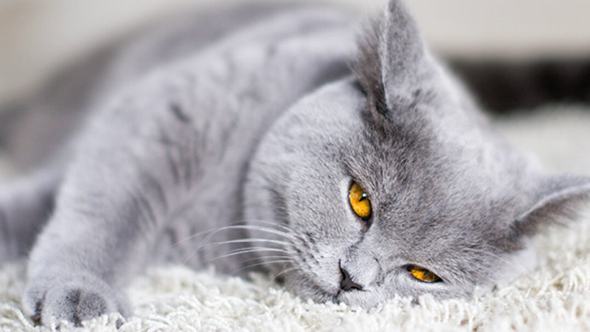

Sus origenes y mas
Mamífero felino de tamaño generalmente pequeño, cuerpo flexible, cabeza redonda, patas cortas, cola larga, pelo espeso y suave, largos bigotes y uñas retráctiles; es carnívoro y tiene gran agilidad, buen olfato, buen oído y excelente visión nocturna; existen muchas especies diferentes. hay gatos salvajes, como el serval o el gato montés, pero la mayoría de ellos son domésticos. Los gatos actuales comparten un antepasado común que probablemente esté relacionado con los Aitanis. Estos pequeños carnívoros de los bosques aparecieron hace alrededor de 60 millones de años y tenían la velocidad y la talla de las jinetas actuales, con un cuerpo alargado y una larga cola. Quedan pocos fósiles en el hemisferio norte. El origen de los felinos está mal documentado en el registro fósil ya que los antepasados de los félinos vivían normalmente en zonas tropicales, que no ofrecen buenas condiciones para la fosilización. Las especies desaparecidas consideradas más cercanas al antepasado de los felinos serían el proailurus (pequeño carnívoro europeo y arborícola aparecido hace 40 millones de años) y el pseudaelurus que vivió hace de 8 a 20 millones de años en Europa y en Asia, y de los que se separaron los felinos actuales hace 10,8 millones de años. Durante el oligoceno, los félidos se repartieron en dos subfamilias. La primera era de la clase Nimravidae, y la segunda de la Felidae. Es en esta última clase donde se encuentra el antepasado común de los félidos actuales, el proailurus. Durante el mioceno, los descendientes de este último, los pseudaelurus, se diversificaron y entraron en África y América. Unos diez millones de años a. C. formaron la raíz de los félidos modernos, favorecidos por las estepas y las sabanas, ricas en presas herbívoras. Es en esta época cuando aparecieron los félidos de caninos largos, que vivirían hasta el año 10.000 a. C. El linaje de pequeños y grandes felinos aparece hace cinco millones de años; originarios de Asia, se dispersan por todo el mundo en el plio-pleistoceno, excepto en Australia y Madagascar. El gato doméstico pertenece al género Felis desde que Carl von Linneo describió por primera vez en 1758 como Felis catus en la trigésima edición de su Systema naturae, pero su posición en la clasificación de los seres vivos cambió mucho. En 2006 se realizaron trabajos sobre los cromosomas sexuales y el ADN mitocondrial de todas las especies de felinos, conjugados con investigaciones paleontológicas, que revelaron que el linaje del gato doméstico (Felis catus) ha divergido verdaderamente hace 3,4 millones de años, en el plioceno, en los desiertos y bosques densos de la cuenca mediterránea. En 2007 se llevó a cabo otro estudio molecular sobre 979 individuos de gato de las arenas y de gatos salvajes de diferentes subespecies en el que el gato doméstico ha permitido mostrar los vínculos entre el gato salvaje africano (Felis silvestris lybica) y el gato doméstico: estos se habrían separado hace alrededor de 130.000 años.
